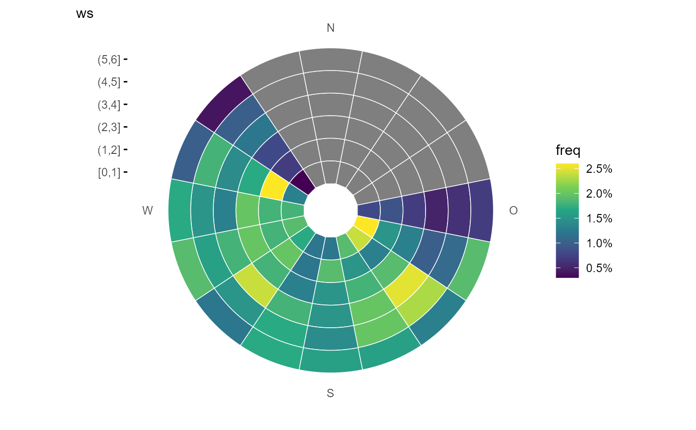
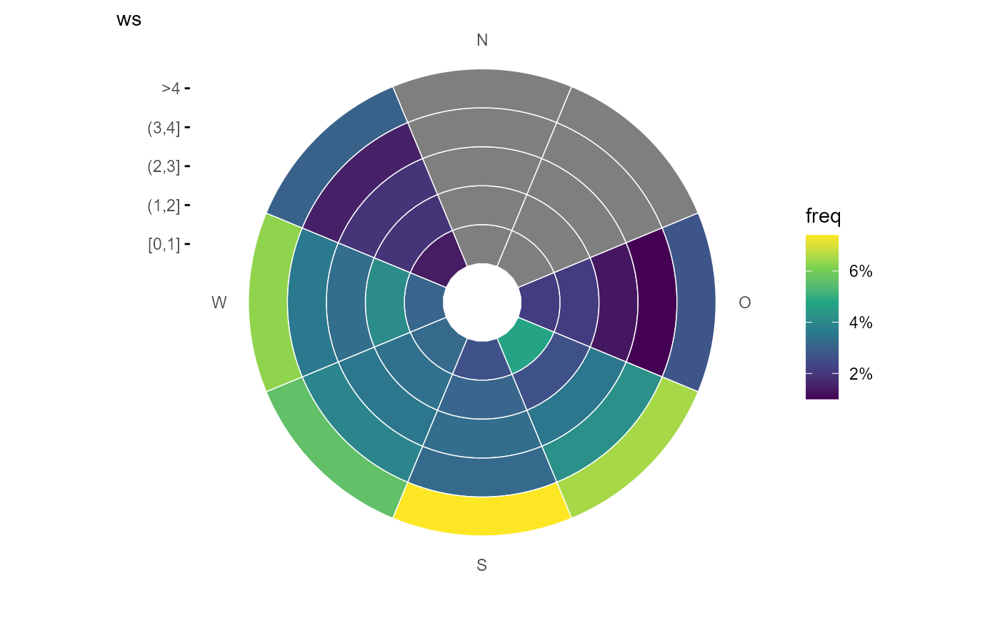
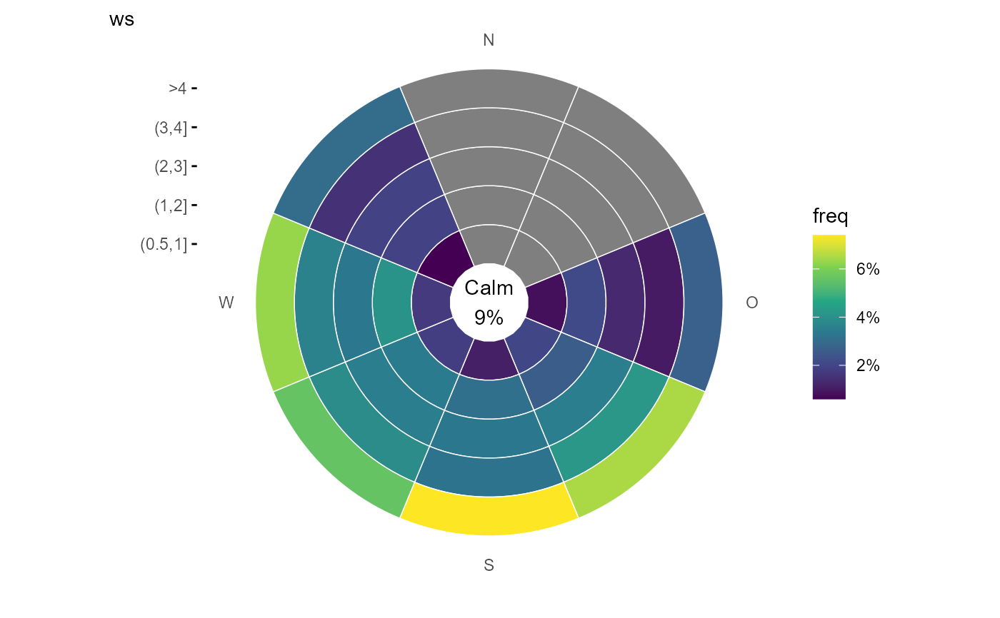
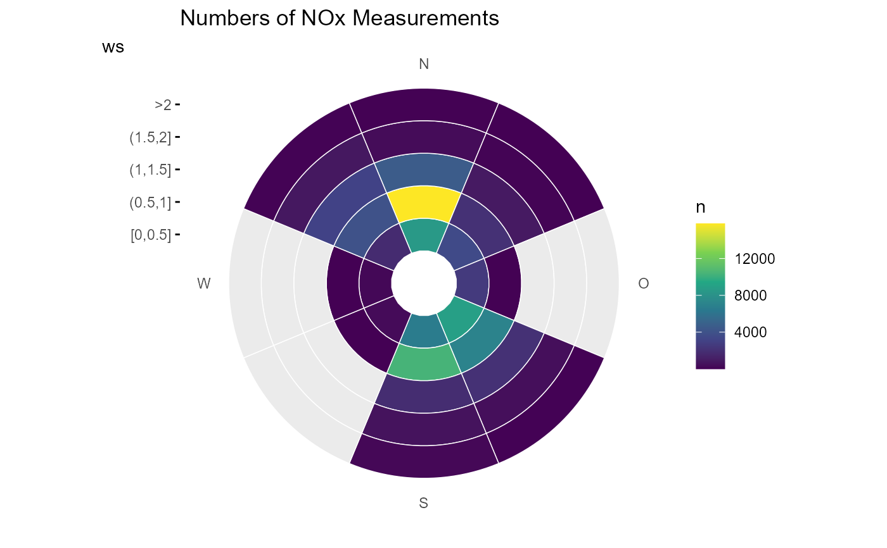

ggplot2 wrapper to to plot wind speed/direction frequencies and other statistics
Source:R/ggpolarfreq.R
ggpolarfreq.RdUsing summary_wind() to calculate und plot summary statisitics over wind direction and
wind velocity bins. Primarily plots wind speed/direction frequencies. Each bin is colour-coded
depending on the frequency of measurements. Bins can also be used to show the concentration of
pollutants using a range of commonly used statistics.
Usage
ggpolarfreq(
data,
ws,
wd,
z = NULL,
wd_binwidth = 45,
ws_binwidth = 1,
ws_max = NA,
groupings = grp(),
fun = "frequency",
fun.args = list(),
nmin = 1,
fill_scale = scale_fill_viridis_c(labels = scales::percent),
bg = NULL,
calm = NA,
calm.prefix = "Calm\n",
calm.accuracy = 1,
calm.color = "black",
calm.size = 3.88,
yexpand = 0.2,
...
)Arguments
- data
a data.frame or tibble containing the data (wide format)
- ws
NULL or symbol giving the wind velocity parameter name (wind velocity preferably in m/s)
- wd
symbol giving the wind direction parameter name
- z
symbol giving the parameter name to be summarised
- wd_binwidth
width of the wind direction bins in degrees wind direction (must fullfill
binwidth %in% 360 / c(4, 8, 16, 32))- ws_binwidth
width of the wind speed bins
- ws_max
if ws_max is specified, a bin with >ws_max will be included
- groupings
additional groupings. Use helper
grp()to create- fun
function or list of functions for summary.
- fun.args
a list of extra arguments passed on to fun.
- nmin
numeric, minimum number of values for fun, if n < nmin: NA is returned
- fill_scale
ggplot2 discrete fill scale, e.g.
ggplot2::scale_fill_gradientn()- bg
bg raster map, e.g. ggmap object as plot background
- calm
if specified as numeric all windspeed below this value will be treated as calm and the proportion will be displayed as text in the center. The color, size of the text can be supplied with
calm.sizeandcalm.color. A prefix for the text can be defined withcalm.prefixand the accuracy of the number withcalm.accuracy- calm.prefix
prefix for the calm text as string. Supplied to
scales::label_percent()as argument.- calm.accuracy
A number to round to. Use (e.g.) 0.01 to show 2 decimal places of precision. If NULL uses a heuristic that should ensure breaks have the minimum number of digits needed to show the difference between adjacent values.
- calm.color
text color
- calm.size
text size
- yexpand
size of the empty calm circle in the center as percentage of the y scale
- ...
Other arguments passed on to
ggplot2::geom_bar(). Used to set an aesthetic to a fixed value. Defaults arecolor = "white", width = 1, size = 0.25
Value
ggplot2::ggplot() object
Examples
library(ggplot2)
fn <- rOstluft.data::f("Zch_Schimmelstrasse_2010-2014.csv")
data <-
rOstluft::read_airmo_csv(fn) %>%
rOstluft::rolf_to_openair() %>%
openair::cutData(type = "season")
# data with empty sectors
npoints <- 1000
data2 <- tibble::tibble(
wd = runif(npoints, 90, 315),
ws = runif(npoints, 0, 6)
)
# more bin, wider bars
ggpolarfreq(data2, ws, wd, wd_binwidth = 22.5, width = 1)

# squish wind speed
ggpolarfreq(data2, ws, wd, ws_max = 4)

# add a lower limit for wind speed (calm)
ggpolarfreq(data2, ws, wd, ws_max = 4, calm = 0.5)

# with real data
ggpolarfreq(data, ws, wd, ws_max = 2, ws_binwidth = 0.5)
# use grp for faceting
ggpolarfreq(data, ws, wd, ws_max = 2, ws_binwidth = 0.5, groupings = grp(season)) +
facet_wrap(vars(season))
# show the frequency of a pollutant measurement
ggpolarfreq(
data = data,
ws = ws,
wd = wd,
z = "NOx",
ws_max = 2,
ws_binwidth = 0.5,
) + labs(title = "Frequency of NOx Measurements")
# use z and provide a stat function, also provide fill_scale for
# correct formating
ggpolarfreq(
data = data,
ws = ws,
wd = wd,
z = "NOx",
fun = "mean",
fun.args = list(na.rm = TRUE),
ws_max = 2,
ws_binwidth = 0.5,
fill_scale = scale_fill_viridis_c()
) + labs(title = "Mean value of NOx")

ggpolarfreq(
data = data,
ws = ws,
wd = wd,
z = "NOx",
fun = ~quantile(., probs = 0.95),
fun.args = list(na.rm = TRUE),
ws_max = 2,
ws_binwidth = 0.5,
fill_scale = scale_fill_viridis_c()
) + labs(title = "95% Percentile of NOx")